, and the whole theory of convergence built on it inherits that accident: in a space whose points have no countable neighbourhood basis, sequences are too few to detect the closure. A filter carries no index set at all – it is the family of sets a limit would eventually be in – and it is the object that makes convergence work in every topological space.
, and the whole theory of convergence built on it inherits that accident: in a space whose points have no countable neighbourhood basis, sequences are too few to detect the closure. A filter carries no index set at all – it is the family of sets a limit would eventually be in – and it is the object that makes convergence work in every topological space.
A filter on a set  is a family
is a family  of subsets such
that
of subsets such
that
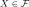
,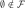
, is closed under finite intersections, and
with 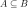
implies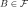
. An ultrafilter is a filter maximal under inclusion among filters on. The principal filter at  is
.
is
.
A filter
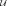
on is an ultrafilter if and only if for
every  either
either 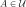
or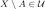
.Suppose is maximal and
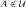
. Then some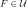
has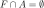
: otherwise the family of sets containing some would be a filter strictly larger than , contradicting maximality. But means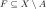
, so .Conversely, assume the dichotomy and let
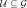
with a filter and
a filter and
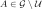
. Then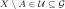
, so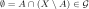
– impossible. Hence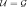
.Every filter is contained in an ultrafilter. In particular, every family of sets with the finite intersection property – every finite subfamily has non-empty intersection – extends to an ultrafilter.
Order the filters containing a given by inclusion. The
union of a chain of filters is a filter: it is closed
upwards, and two of its members lie in a common member of the chain, so
their intersection lies there and is non-empty. Zorn's lemma gives a
maximal element, which is an ultrafilter containing .
Given a family with the finite intersection property, the sets containing some finite intersection of its members form a filter, to which the first part applies.
A filter on a topological space converges to
, written
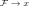
, if every neighbourhood of
belongs to ; it clusters at if every
neighbourhood of meets every member of .
For ,
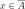
if and only if some filter containing converges to . A map
converges to . A map  is
continuous at if and only if implies
is
continuous at if and only if implies
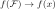
, where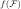
is the filter generated by the images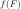
,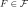
.
If and , every neighbourhood
of lies in , so it meets – two members of a
filter cannot be disjoint. Hence . Conversely, if
then the sets
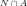
, with a
neighbourhood of , are all non-empty and closed under finite
intersection, so they generate a filter containing and every
neighbourhood of .
a
neighbourhood of , are all non-empty and closed under finite
intersection, so they generate a filter containing and every
neighbourhood of .
For continuity: if  is continuous at and ,
let
is continuous at and ,
let  be a neighbourhood of
be a neighbourhood of  ; some neighbourhood
; some neighbourhood  of
has
of
has
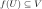
, and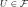
, so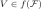
. Conversely, apply the hypothesis to the filter of all neighbourhoods of, which converges to : its image
contains every neighbourhood of , which says exactly that some
neighbourhood of is mapped into each.
A topological space is compact if and only if every ultrafilter on it converges.
Let be compact and an ultrafilter that converges
to no point. Then each has an open neighbourhood
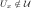
, hence with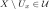
. Finitely many cover
, so
cover
, so 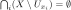
lies in – impossible.
Conversely, suppose every ultrafilter converges and let
 be a family of closed sets with the finite intersection
property. Extend it to an ultrafilter , which converges
to some . For
be a family of closed sets with the finite intersection
property. Extend it to an ultrafilter , which converges
to some . For
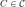
, every neighbourhood of
lies in and so meets  ; as is closed,
; as is closed,
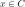
. Thus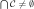
, and taking complements this is exactly the finite subcover property.The last theorem replaces "extract a convergent subsequence" by "extend to an ultrafilter and it converges", with no countability anywhere – and it makes Tychonoff's theorem a two-line argument, since an ultrafilter on a product pushes forward to an ultrafilter in each coordinate.